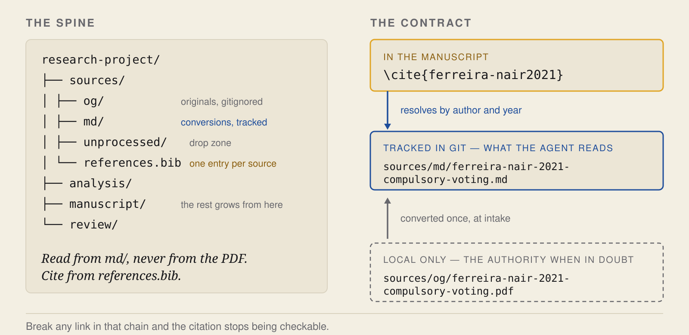
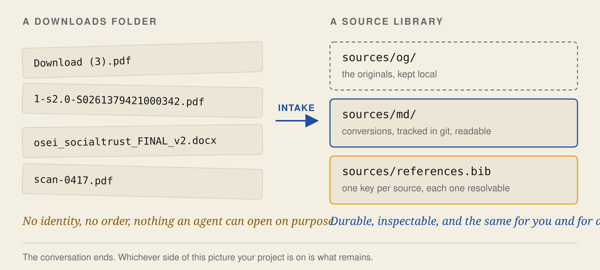
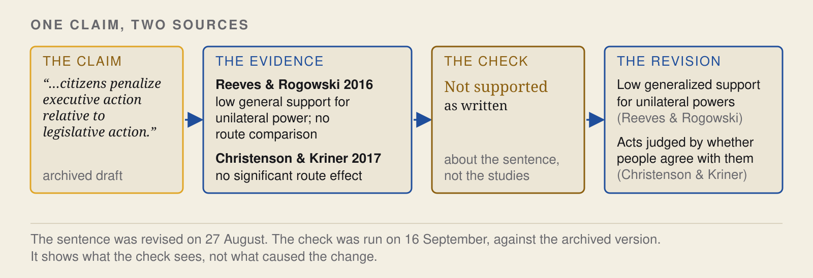

What this demonstrates
You are given four files in the state research materials usually reach you in. Two PDFs under names a browser and a publisher chose, a Word document, and a photograph of a page. You will have an agent identify each one, file it, and convert it, and then you will check what the conversion actually did.
The run produces three readable Markdown files and a bibliography whose keys resolve to them. It refuses the scan, which has no text in it. And it quietly damages a table in one of the PDFs without reporting any failure, which is the part worth your attention. Then you point the same skill at a second project that grew without a convention, and read what it finds.
The sources are invented, and so are their authors and journals. The conversion problems are real.
What this run produces
| You need | You do | You end up inspecting |
|---|---|---|
Claude Code and the skills (Getting started), Java 11 or newer, poppler-utils | Scaffold a project, file four sources, convert them, audit a second project | Three conversions, one refused scan, one damaged table, four audit findings |
1. Get the files
git clone https://github.com/scdenney/ai-for-research.git
mkdir -p ~/kb-demo && cd ~/kb-demo
claudeWork in the empty folder, not in the clone. The four files you will use are in ai-for-research/demos/knowledge-base/inbox/.
2. Create the project
Researcher. In the new folder:
/oss:research-repo .A skill is a stored procedure. Invoking one loads its instructions for this task, and the agent then works against this folder while you inspect what it did.
What it writes is a source library with four parts. Three directories and one file:
sources/og/the originals, exactly as acquired. Gitignored, for size and for copyright. The authority whenever a conversion is in doubt.sources/md/the conversions. Tracked in git. This is the layer an agent actually works in, and what agrepsearches. Nothing downstream reads the PDFs.sources/unprocessed/the drop zone, and only that. A file waits here until it has been identified and renamed, which moves it toog/. Nothing is ever converted out of this folder.sources/references.bibone entry per source, written at intake rather than in a batch at the end. The key has to resolve to its file by author and year, because that is how a checker maps a citation to a document.
It also writes a conversion script, a project-local /process-source command, and a CLAUDE.md with AGENTS.md symlinked to it, so a second agent family reads the same conventions.
references.bib. A key that does not resolve to a filed source is a citation nobody can check, including you.
3. File the four sources
Copy the four files into the drop zone, then run the intake command once per file.
cp ~/ai-for-research/demos/knowledge-base/inbox/* sources/unprocessed//process-sourceFive steps happen. Conversion reads from og/, not from the drop zone, so a file has to be identified and renamed before anything can convert it. That ordering is why the identity step cannot be skipped.
| Step | Who | What changes on disk |
|---|---|---|
| Drop | Researcher | the file sits in sources/unprocessed/ |
| Identify | Agent proposes, researcher confirms | author, year, title, venue |
| Rename | Agent | sources/og/author-year-slug.pdf |
| Convert | Tool runs, researcher checks | sources/md/author-year-slug.md |
| Register | Agent | an entry in sources/references.bib |
Identify is the step that cannot be skipped. The name it produces is what makes a citation key resolvable later, so read what the agent proposes before confirming it.


4. Check what the conversion did
Three conversions are already there. Run the converter again and it says so:
./scripts/convert-sources.sh NEEDS OCR (image-only): kowalski-2017-turnout-cascades.pdf
Converted 0 file(s), 1 need OCR. Markdown in $PROJECT/sources/md/Nothing new, and the scan still flagged. This is the point to be precise about what the converter does, because it is not what people assume.
It extracts the text layer a PDF already contains. A digital PDF carries its text inside the file, and OpenDataLoader PDF pulls that out as Markdown. Word and other Office formats take a different path, through anydoc or pandoc. None of this is OCR. Nothing here reads pixels.
Which is exactly why the fourth file stops. scan-0417.pdf is a photograph of a page. It has no text layer, so there is nothing to extract. The script tests for this before it tries, by measuring how much text comes out per page and treating fewer than 300 characters as an image, and it refuses rather than proceeds. Without that guard the converter exits successfully and writes a few kilobytes of noise, and the file then looks exactly like a source that has been acquired, converted, filed, and read.
Reading pixels is a separate job for a separate skill. Send the scan to /oss:vlm-ocr when you want it, or leave it where it is and let the audit keep reporting it.
Now the part that reports nothing at all. Did the converter keep the table's rows and columns? This table is on page 2 of the Ferreira and Nair PDF:
| Outcome | Estimate | 95% interval |
|---|---|---|
| Turnout (percentage points) | 11.2 | 8.4 to 14.0 |
| Knowledge index (standard deviations) | 0.01 | −0.06 to 0.08 |
And this is sources/md/ferreira-nair-2021-compulsory-voting.md, as the converter wrote it:
### 3. Results Outcome Estimate 95% interval
Turnout (percentage points) 11.2 8.4 to 14.0 Knowledge index (standard deviations) 0.01 −0.06 to 0.08Every number survived. The row and column structure did not. The header was absorbed into the section heading and both rows run together on one line, so anyone reading this file, person or agent, has to reconstruct which interval belongs to which outcome rather than read it off. The prose came through cleanly and stayed searchable:
$ grep -n "does not appear to teach" sources/md/*.md
sources/md/ferreira-nair-2021-compulsory-voting.md:36:Whatever compulsory voting does, it does not appear to teach.Nothing in the run log says the table collapsed. The tool creates readable text. You check it. That is why the original stays the authority for anything where layout carried meaning.
Then look at what registration produced, and at the link it creates:
@article{ferreira-nair2021,
author = {Ferreira, Tom\'{a}s and Nair, Priya},
title = {Does Compulsory Voting Make Better Citizens?},
...
}ferreira-nair2021 resolves by author and year to sources/md/ferreira-nair-2021-compulsory-voting.md, which was converted from sources/og/ferreira-nair-2021-compulsory-voting.pdf. That chain is what a citation check follows.
5. Audit a project that already exists
Most researchers do not start clean. The same skill, pointed at a folder that has one, reports what is present, what is partial, and what is missing.
/oss:research-repo path/to/ai-for-research/demos/knowledge-base/messy-projectFour findings, and they are worth reading as pairs:
- Two originals were never converted.
Paper1.pdfandferreira nair FINAL (2).pdfsit inog/with nothing inmd/. Filed, and unreadable to anything downstream. - Neither name can be matched. Both break
author-year-slug, so no citation key resolves to them. - One conversion has no bibliography entry.
lindqvist-2019-civic-education-turnout.mdis read, and not citable. - One entry has no source.
osei2020is cited and unfiled. Acquire it, or move it tomissing.bibwith a note on why you could not.
The last two are the same failure from opposite ends, and an audit that checks one direction misses half of it. The project is also missing the pipeline itself: no .gitignore, no conversion script, no sources/README.md.
Git makes changes recoverable and attributable across sessions. Originals stay local and conversions are tracked. But recorded is not verified. Git tells you what changed and who changed it, and the audit tells you what is present. Neither tells you a filed source is right.
6. Why it is built this way
The pattern is Andrej Karpathy's. In April 2026 he published an idea file he called an LLM wiki, aimed at how retrieval usually works. Upload a folder, ask a question, let the model find the relevant chunks. It answers, but, as he puts it, "the LLM is rediscovering knowledge from scratch on every question. There's no accumulation." His alternative is a set of Markdown files between you and the raw documents, which the model writes and keeps current. Three layers: raw sources it reads and never edits, the wiki it owns, and a schema file, CLAUDE.md or AGENTS.md, saying how the collection is organized. Christopher Kenny built that pattern into something a researcher can inspect.
This demo takes Karpathy's first and third layers as they are. sources/og/ is the immutable raw layer, and the CLAUDE.md the skill writes is the schema.
It changes the middle layer, and the reason is the difference between research and the software work most agent tooling was built around. Code has fast, repeatable checks: a test, a compiler, a visible output. Matt Pocock's procedure for diagnosing a bug starts by naming a command that exposes the failure, because in software you can usually name one. Research has no such command. Evidence, design, and interpretation get checked slowly and by people, which makes the process more brittle and more subjective, and an agent iterating without a signal produces fluent work nobody can falsify.
So the library is built to make a check possible, not to keep you informed. Four departures follow, and a project with different checks would need others.
- A conversion, not a synthesis.
sources/md/sits where Karpathy's wiki sits: it is the layer the model reads and works in. Its contents are different. In the wiki pattern the model writes the summary and you read it. Here the tracked file is an extraction of the original, because the thing you cite has to be the thing you read. A summary's silence is not evidence that the original says nothing. - A bibliography. A personal knowledge base never has to survive a citation check.
references.bibis what makes the library answerable to a manuscript. - Originals kept out of git. Copyright and size, not tidiness.
- A record of what is missing.
missing.bibholds what was cited and could not be filed, so an absence stays visible.
7. What the library makes possible
| Part of the flow | Skill | What it does |
|---|---|---|
| Knowledge base | research-repo | Preserve and connect the evidence |
| Source identity | citation-check | Resolve citations and bibliographic records |
| Claim support | fact-check | Compare manuscript claims with filed sources |
| Paper and package | paper-review-lite, replication-package | Review the paper and execute package checks |
The dependency is uneven, and worth being precise about. fact-check is the one that needs this library: it refuses to run without a per-source Markdown file for roughly two thirds of the cited works, because a check against a half-built library produces false reassurance. citation-check reads the manuscript and the bibliography, not the conversions. paper-review-lite reads whatever it is given. replication-package works on a separate artifact and does not touch the source library at all.
These checks improve verifiability. They make the files, transformations, and evidence available for inspection. They do not establish the validity of a research conclusion.
8. The same practice on a real manuscript
Not part of the demo, and not reproducible from it. This is from the author's own work, and it shows what the reading is for.
An archived draft of Denney, Governing Immigration by the Rules (2026), contained this sentence: "Studies of unilateral policymaking similarly show that citizens penalize executive action relative to legislative action," citing Reeves & Rogowski (2016) and Christenson & Kriner (2017). To support it, those sources would have to compare support for the same policy under executive action and under legislation.
Both were filed and readable, so a check could read them. Reeves and Rogowski report that "only about a quarter of respondents in any of the surveys supported unilateral policy making," which is low general support for unilateral power, not a same-policy comparison. Christenson and Kriner report that the student-loan route "has no significant influence on the probability of a subject backing the president," which is no significant route effect, not a general penalty on executive action. The comparative claim is unsupported as written. The verdict is about the sentence, not the two studies.
The sentence was revised on 27 August 2026 to two narrower claims, each attached to the source that supports it. The check shown here was run on 16 September 2026, against the archived version, for the lecture this page accompanies. It shows what the check sees. It is not what caused the revision.

9. Check it yourself
- Rename a file so its author and year stop matching its key, then re-run the audit.
- Add a source and skip the bibliography entry. Drift gets reported in both directions.
- Open a conversion beside its original and compare the tables, not the prose.
- Put the scan through OCR, then audit again and watch the orphan disappear.
Every planted problem is listed in the answer key, and the exact commands are in prompts/run.md.
Next: reference and source-claim checking
the claim check needs a manuscript as well as a library, and this demo ships no manuscript. That one supplies both.
Sources
- Karpathy, A. (2026). LLM Wiki. GitHub Gist, 4 April. The idea file, written to be handed to an agent. An implementation and an overview followed.
- Kenny, C. T. (2026). Agentic AI for Political Science Research. Center for the Study of Democratic Politics, Princeton University, 10 September.
- Pocock, M. (2026). Skills, including
diagnosing-bugs, the source of the name-the-failing-command rule. - Conversion uses OpenDataLoader PDF for PDFs and anydoc for Office formats.
- The two sources read in section 8: Reeves, A., and Rogowski, J. C. (2016), The Journal of Politics, doi:10.1086/683433. Christenson, D. P., and Kriner, D. L. (2017), American Journal of Political Science, doi:10.1111/ajps.12262.